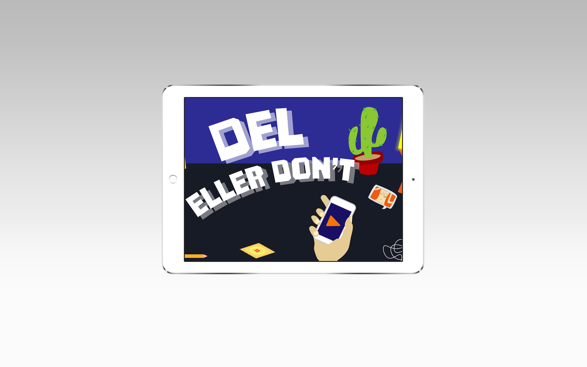
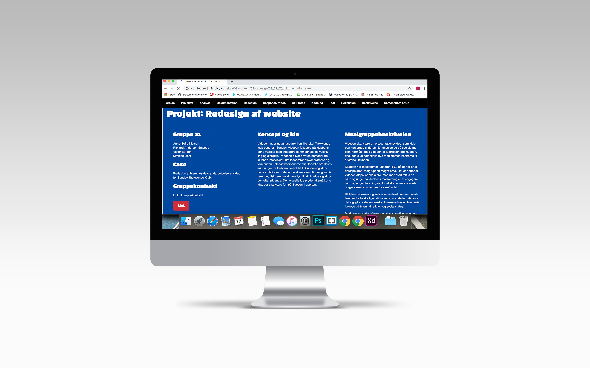

Portfolio:
Samlet overblik over udvalgte projekter fra semesteret vinter 2019, hvert projekt er udarbejdet alene af mig eller i grupper med andre.
01.04.02
01.04.02 bestod i at lære fundamentet af multimediedesign, her i bland HTML og CSS. Temaet gav en grundlæggende forståelse for layout, komposition og gestaltlove.
Swiss Style også kendt som The International Typographic Style er en stilart der udviklede sig i Schweiz i 1950’erne. Stilen blev et stort hit på et globalt plan, og er i dag gået hen i det mere normale end det særlige, for eksempel er flere typografier vi bruger til dagligt inspireret fra Swiss style.
Responsive_site_v2
02.01.04
02.01.04 var udarbejdelsen af eget spil via Java Script og CSS animationer. Projektet omhandlede at genere og tegne et spil ved hjælp af skitseringsteknikker, idegenereringsteknikker, moodboards og styletiles. Alle grafiske spil elementer er tegnet i Adobe Illustrator og gemt som svg. Filer.
Figurene er tegnet simpelt og er kun illustreret med de mest essentielle træk. Farverne gør brug af stærke kontraster da der ikke bruges outlines.
Assetliste og designdokumentation

03.03.04
I 03.03.04 er animations spillet blevet testet, udviklet og færdig udarbejdet. Spillet er udviklet via browserteknologi, det vil sige at spillet er bygget på HTML CSS og Java Script.
Til udarbejdelsen af selve spillet, er der blevet brugt essentielle state machine diagrammer samt aktivitetsdiagrammer.
Animations-opgaven
02.05.03
02.05.03 samler op på tema 02 og introducerede nye samarbejdsredskaber. SCRUM er et simpelt projektledelses værktøj, SCRUM hjælper med at danne et overblik i gruppen over hvert medlems arbejdsprocess.
Opgaven bestod i en case fra Sex & Samfunds datterselskab Privat Snak. Privat Snak prøver at vejlede børn og unge i hvad der er tilladt at dele på internettet, casen bestod i at animere et spil der kunne belyse problemet.
Færdig opgave
03.02.06
03.02.06 bestod i udarbejdelsen af et styletile, som skulle anvendes i redesignet af Sundby Taekwondo Klubs hjemmeside. De primære farver knytter sig til det sydkoreanske flag, alle fire farvekoder følger retningslinjerne for flaget. Farverne i flaget har en central plads i den koreanske kampsport Taekwondo.
Opgaven bestod i en case fra Sex & Samfunds datterselskab Privat Snak. Privat Snak prøver at vejlede børn og unge i hvad der er tilladt at dele på internettet, casen bestod i at animere et spil der kunne belyse problemet.
Link til styletile i Googledrev
03.02.07
03.02.07 er opsamlingen på alt den viden, som der er blevet tillært i temaet. Det indeholder elementer som fotostil, storyboards, interviewguides og videobehandling.
Dokumentationsitet indeholder tanker samt relevante ideer, der stod bag redesignet af hjemmesiden. Der er redegjort for billederedigering, videoredigering og målgruppebeskrivelser. Dermed er der forklaret anvendelsen af diverse test, her i blandt BERT-test og 5 sekunders test. De anvendte test har været med til at belyse problemerne ved hjemmesiden.
Link til endeligt dokumentationsite
03.02.08
03.02.08 er redesignet af Sundby Taekwondo Klub. På baggrund af den dokumentation samt empiri der er blevet indsamlet i de tidligere faser af temaet, er hjemmesiden blevet redesignet. Projektet er organiseret og styret via Scrum, således at alle projektets deltager kunne kontrollere og regulere deres opgaver.
Websiden er opbygget af seks HTML filer, men kun én style fil og én script fil. CSS og Script filerne bruger genanvendelige regler og classes, således at forskellige HTML filer anvender de samme classes.
Link til redesign af website

04.01.01
04.01.01 var en uges designsprint, ideen med et designsprint er at udvikle samt teste en prototype på relativ kort tid.
Design sprintet er utroligt effektivt og kræver en uges ryddet kalender, i dette design sprint tager blev der taget udgangspunkt i den interne kommunikations platform: Fronter. Mange studerende mener at Fronter er problematisk, da det er uorganiseret, forvirrende og har lange vanskelige stier til diverse mapper.
Design sprint

04.02.01
04.02.01 - Web prototype, er en videreudvikling af den allerede udviklet prototype. Denne version udarbejdes efter feedback og opsamling af alle udviklernes bedste features. Prototypen testes i gennem et interview, samt brugerbaseret actions test.
På baggrund af tænkehøjt test, actions test og Lighthouse test, kunne der konkluderes en række ændringsforslag til prototypen.
Design Sprint

04.03.01
04.03.01 Var et nyt design sprint, med målet at udvikle en Native Fronter applikation. Opgaven bød arbejde i alle faser af design sprinter: map, sketch, decide, prototype og pitch.
Efter en række forskellige øvelser, blev det endelige goal at udvikle en gruppedannelse applikation som alle studrende åbner hver gang der er gruppearbejde.